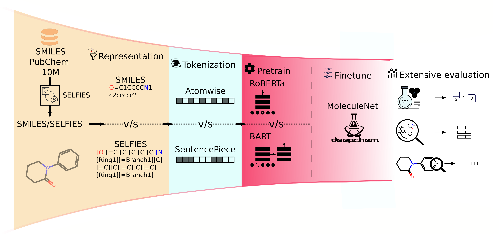
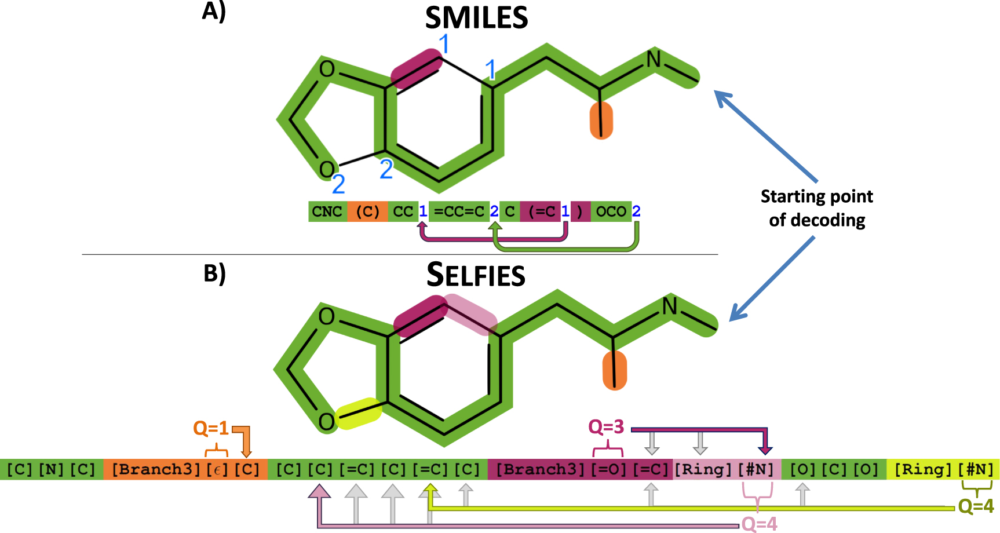
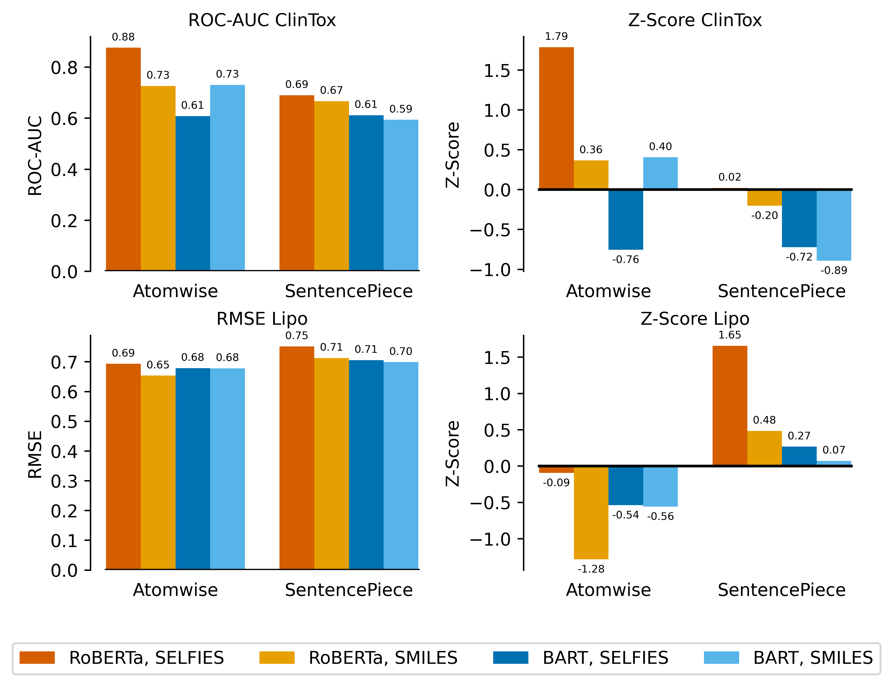
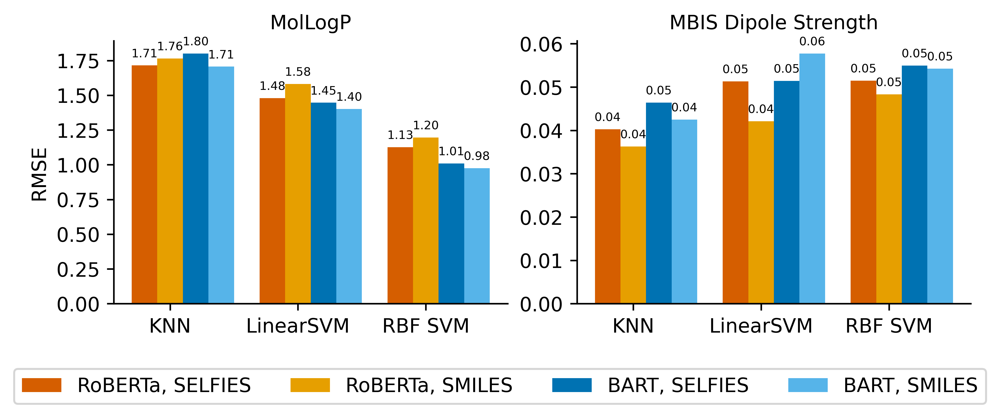
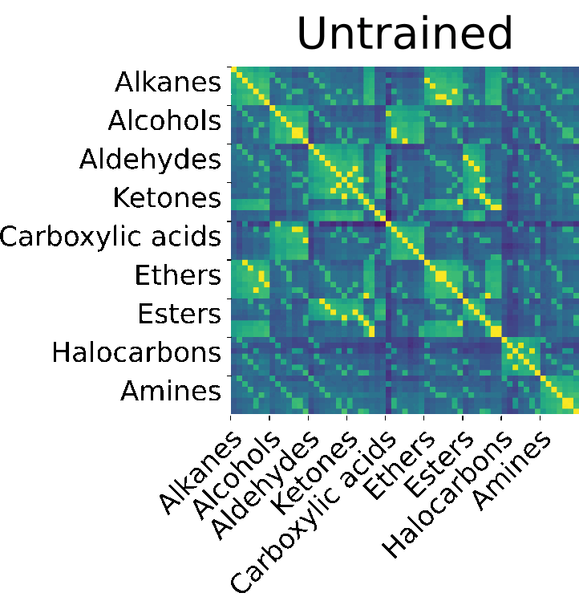
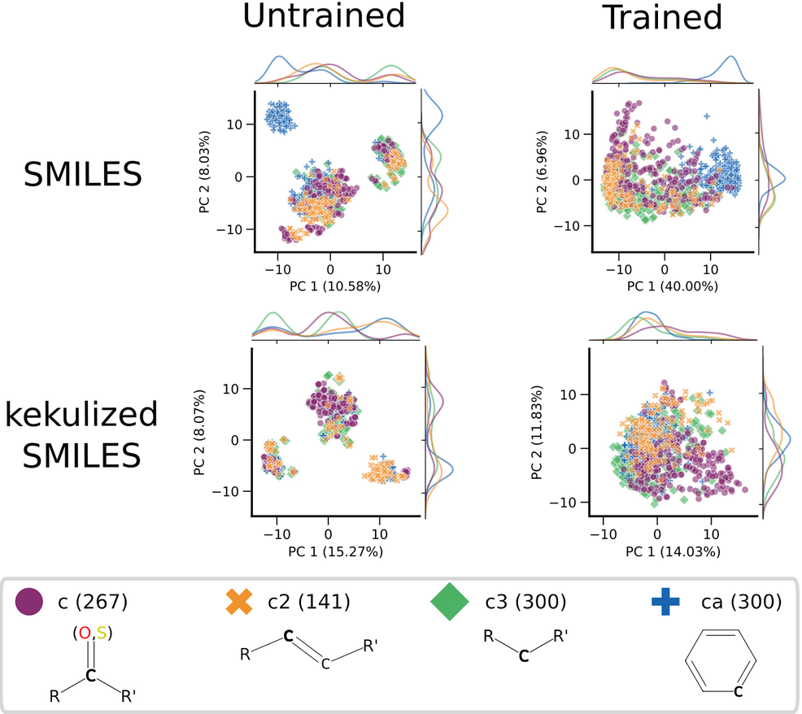

Our workflow: Systematic analysis of molecular representation, tokenization strategies, and architecture in chemical language models (CLMs)
“I want to predict molecular properties with a chemical language model, but where do I even start?
RoBERTa or BART? SMILES or SELFIES?
Does any of this really make a difference?...”
These are the kinds of questions that inspired our recent study, Beyond performance: How design choices shape chemical language models.
In this work, we take a step back from leaderboard numbers and benchmarks to ask a deeper question: how do different design choices, e.g. architecture, tokenization, and molecular representation, shape what chemical language models actually learn?
What started as a comparison between SMILES [1] (a decades-old molecular notation, de facto standard) and SELFIES [2] (a newer, machine-learning-friendly alternative) soon grew into a systematic exploration of the inner workings of chemical language models (CLMs).
Along the way, we uncovered how design choices influence not just model performance, but also the structure and interpretability of their latent chemical spaces.
But first, a refresher on representations, tokenization, and model architecture:
Representations encode a molecule into a computer-readable textstring

A great illustration from the SELFIES paper from Krenn et al., 2020 that highlights the differences between SMILES and SELFIES.
Language models have traditionally relied on the Simplified Molecular Input Line Entry System (SMILES) [1], introduced in the late 1980s. SMILES is a simple rule-based textual format for representing molecules, but its rules do not guarantee valid molecules. As a result, a large proportion of the latent space learned by models corresponds to invalid molecules [10].
To address these limitations, Self-Referencing Embedded Strings (SELFIES)[2] were introduced in 2020. SELFIES is a robust, string-based representation akin to a simple computer script that differs from SMILES by ensuring 100% validity for all molecules. Unlike SMILES, SELFIES avoids direct use of numbers (e.g. for ring closures) but instead overloads tokens to encode structural features. This design, together with the use of brackets in SELFIES syntax, makes its raw string representations roughly 4.4 times longer than SMILES on average in the PubChem 10M dataset. However, after tokenization, both representations yield a comparable number of tokens per molecule, since each SELFIES token corresponds approximately to an atomic or structural unit in SMILES.
Tokenization cuts enormous sequences into digestible pieces
During tokenization, sequences are broken down into sub-sequence tokens. These tokens are mapped to embedding vectors, which the model learns. [11] Tokenization ensures a finite vocabulary, improving model efficiency and enabling the handling of unknown sequences by recognising familiar tokens rather than entire sequences.
Tokenization can be applied at different granularities: from character-level (splitting text into individual characters) to word-level (splitting into words), or intermediate approaches such as subword tokenization. The type of tokenizer directly affects the number and length of tokens, as well as the vocabulary size, all of which impact model training and performance.
| SMILES | Cc1cc(=O)[nH]c(=S)[nH]1 |
|---|---|
| Atomwise | C | c | 1 | c | c | ( | = | O | ) | [nH] | c | ( | = | S | ) | [nH] | 1 |
| SentencePiece | C | c1c | c(=O)[nH] | c( | =S) | [nH]1 |
We focused on two tokenization strategies (see Table 1):
1. SentencePiece tokenization [4, 5]: This data-driven approach identifies the most frequently occurring substrings across all molecular sequences and constructs a vocabulary from them.
2. Atom-wise tokenization [6]: In this rule-based approach, molecular sequences are split into atomic and structural tokens using a regular expression, ensuring that each token corresponds to a chemically meaningful unit.
Model architecture
The transformer architecture revolutionized natural language processing (NLP) [12], inspiring a family of models such as BERT, RoBERTa, and BART [11].
BERT (Bidirectional Encoder Representations from Transformers, 2019) uses only the encoder component of the transformer and is pre-trained with Masked Language Modeling (MLM) and Next Sentence Prediction (NSP) objectives. Its bidirectional attention—capturing both left and right context around each token—and flexibility for fine-tuning on diverse downstream tasks set new state-of-the-art benchmarks [11].
RoBERTa (Robustly Optimized BERT Approach, 2019) builds upon BERT by optimizing hyperparameters, removing the NSP objective, and introducing dynamic MLM masking, leading to improved robustness and performance across benchmarks [7].
BART (Bidirectional and Auto-Regressive Transformer, 2019) extends the architecture further into a full encoder-decoder setup. Trained as a denoising autoencoder, BART corrupts and reconstructs text during pretraining, achieving state-of-the-art results in question answering and text generation tasks, matching RoBERTa's performance on GLUE and SQuAD benchmarks [8].
Experimental Set-Up
Our experiments were based on the PubChem-10M molecule dataset [3], from which we obtained molecular strings in both SMILES and SELFIES representations. We then explored two tokenization strategies, SentencePiece [4, 5] and atom-wise [6], to convert these molecular strings into model input tokens. For the model architectures, we used two widely adopted transformer variants: RoBERTa [7] and BART [8]. All combinations of representation, tokenization, and architecture were trained independently, resulting in 18 pre-trained chemical language models. Each model was subsequently fine-tuned on downstream property-prediction tasks from the MoleculeNet benchmark as implemented in DeepChem [9]. We note that the MoleculeNet datasets were used only for consistent comparison across model configurations, not to achieve new state-of-the-art performance. (For a discussion on the limitations of MoleculeNet as a benchmark, see this insightful blogpost).
Z-Scores make downstream tasks comparable
When fine-tuning our models on the MoleculeNet classification and regression datasets, we encountered a challenge: the evaluation metrics differ across tasks. Classification tasks are evaluated with ROC-AUC, while regression tasks use RMSE: Each metric has a different scale and variability. m A 0.04 difference in one metric might be a massive win, but in another, it could be negligible, as can be seen when comparing the ClinTox and Lipo plot. This made it nearly impossible to judge which model design was actually performing better overall.
To fix this, we used Z-Score normalization [13]. In simple terms, this means we expressed each model's result relative to the mean and spread of scores for that specific task. With everything on the same standardized scale, we could finally compare how different design choices really affected performance.
This step was crucial for revealing trends that were consistent across datasets, rather than being misled by raw score differences. In fact, using these standardized z-scores led to one of our papers first surprising insights: different configurations of tokenizers, representations, and architectures often performed surprisingly similarly on downstream prediction tasks.

Scores for ClinTox and Lipo tasks, showing the effect of Z-score.
Testing the latent space with probing estimators
To evaluate what our chemical language models have learned, we used probing estimators[14], simple ML models trained on the embeddings of pre-trained models to investigate the organization of the latent space. Specifically, we tested Linear SVM, RBF SVM, and k-Nearest Neighbour (k-NN).
We used the probing estimators to study the latent space itself and show some of the results in the next plot. We studied the latent space at two levels:
1. Molecular level, where properties of whole molecules (e.g., MolLogP) were predicted.
2. Atomic level, where properties of individual atoms (e.g., MBIS Dipole Strength) were queried.
The results revealed clear patterns. k-NN performed best on atomic tasks, while Linear SVM excelled on molecular tasks. RBF SVM, with its flexible non-linear boundaries, performed consistently well across both levels, demonstrating its versatility.
From these performance differences, we can infer the structure of the latent space. The fact that k-NN works well for atomic tasks suggests that atomic embeddings are locally clustered, likely by chemical element, with subtle variations within clusters. Linear SVM performs poorly on atomic tasks because its global linear boundaries cannot easily separate these fine-grained differences. Conversely, the strong performance of Linear SVM on molecular tasks indicates that molecular embeddings are more coherent and less dominated by single features, allowing global estimators to capture patterns across molecules that k-NN cannot.
In summary, probing estimators allow us to indirectly reveal the organization of the latent space, providing insight into how the model represents chemical information at different levels of granularity.

The difference between molecular MolLogP and atomic MBIS Dipole Strength.
Some patterns stick post-training; some knowledge comes straight from the representation.

To explore how molecular patterns are represented, we computed cosine similarities between embeddings of molecules from nine classes of hydrocarbons and their derivatives, with brighter colors indicating higher similarity. Strikingly, the overall patterns observed in untrained models are largely preserved after training, showing that the choice of molecular representation (SMILES vs. SELFIES) strongly shapes the structure of the embeddings. Some class-specific patterns, such as the high similarity between aldehydes and ketones, persist, while length-based patterns—off-center diagonals in untrained models reflecting molecules of the same length—also remain faintly visible in pre-trained embeddings.
The architecture primarily influences the numerical range of cosine similarity values. BART embeddings display a wider range of similarities, while RoBERTa embeddings are "compressed" into a narrower range.

At the atom level, we used Antechamber (Amber package [15]) to assign atom types within molecules, allowing us to probe how embeddings represent chemical detail. Surprisingly, even untrained models—with completely random embeddings—already show meaningful clustering of atom types, for example, aromatic versus aliphatic carbons in SMILES. This is partly due to how the representation encodes chemical features (e.g., lowercase c for aromatic carbon in SMILES), but it highlights an important point: latent spaces can appear structured even before any training.
Same same but different and why that matters
Ultimately, our results show that there is not a single "best" configuration: different combinations of representations, tokenizers, and architectures can all yield chemically interpretable embeddings. But the way the models leverage representations and how and what details they learn from them differs. And for some projects, success may lie in the subtleties reminding us that understanding how a model learns chemistry is just as important as measuring how well it performs. After all, the true objective of science is not merely prediction, but understanding what transforms data into knowledge.
References
[1] Weininger, D. Smiles, a chemical language and information system. Journal of chemical information and computer sciences 28, 31-36 (1988).
[2] Krenn, M., Häse, F., Nigam, A., Friederich, P. & Aspuru-Guzik, A. Self-referencing embedded strings (selfies): A 100% robust molecular string representation. Machine Learning: Science and Technology 1, 045024 (2020)
[3] Ahmad, W., Simon, E., Chithrananda, S., Grand, G. & Ramsundar, B. Chemberta-2: Towards chemical foundation models. arXiv preprint arXiv:2209.01712 (2022)
[4] Kudo, T. & Richardson, J. Blanco, E. & Lu, W. (eds) SentencePiece: A simple and language independent subword tokenizer and detokenizer for neural text processing. (eds Blanco, E. & Lu, W.) Proceedings of the 2018 Conference on Empirical Methods in Natural Language Processing: System Demonstrations, 66-71 (Association for Computational Linguistics, Brussels, Belgium, 2018). URL https://aclanthology.org/D18-2012/
[5] Li, X. & Fourches, D. Smiles pair encoding: a data-driven substructure tokenization algorithm for deep learning. Journal of chemical information and modeling 61, 1560-1569 (2021)
[6] Schwaller, P. et al. Molecular Transformer: A Model for Uncertainty-Calibrated Chemical Reaction Prediction. ACS Central Science 5, 1572-1583 (2019)
[7] Liu, Y. et al. Roberta: A robustly optimized bert pretraining approach. arXiv preprint arXiv:1907.11692 (2019)
[8] Lewis, M. et al. BART: Denoising sequence-to-sequence pre-training for natural language generation, translation, and comprehension. Proceedings of the 58th Annual Meeting of the Association for Computational Linguistics 7871-7880 (2020)
[9] Wu, Z. et al. Moleculenet: A benchmark for molecular machine learning. CoRR abs/1703.00564 (2017)
[10] Krenn et al., 2022: SELFIES and the future of molecular string representations. Patterns
[11] Sultan, A., Sieg, J., Mathea, M. & Volkamer, A. Transformers for Molecular Property Prediction: Lessons Learned from the Past Five Years. Journal of Chemical Information and Modeling 64, 6259-6280 (2024).
[12] Vaswani, A. et al. Attention is all you need. Advances in neural information processing systems 30 (2017)
[13] Kreyszig, Erwin, K. Stroud, and G. Stephenson. "Advanced engineering mathematics." Integration 9.4 (2008): 1014
[14] Belinkov, Yonatan. "Probing classifiers: Promises, shortcomings, and advances." Computational Linguistics 48.1 (2022): 207-219.
[15] Wang, J., Wang, W., Kollman, P. A. & Case, D. A. Automatic atom type and bond type perception in molecular mechanical calculations. Journal of Molecular Graphics and Modelling 25, 247-260 (2006)
Contact
Clone the code or ask a question on GitHub. Otherwise, you can contact us via email: inken.fender@unibe.ch & jannik.gut@unibe.ch.